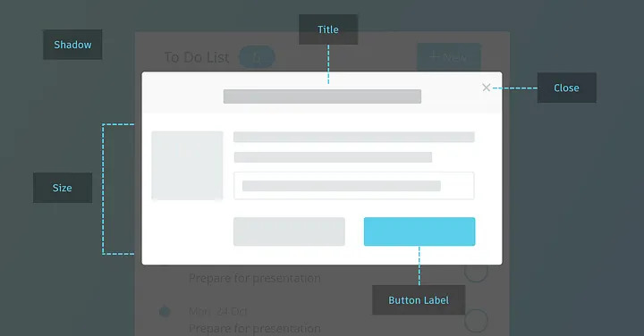
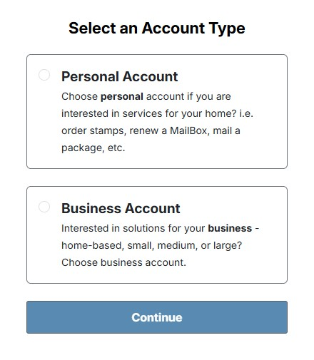
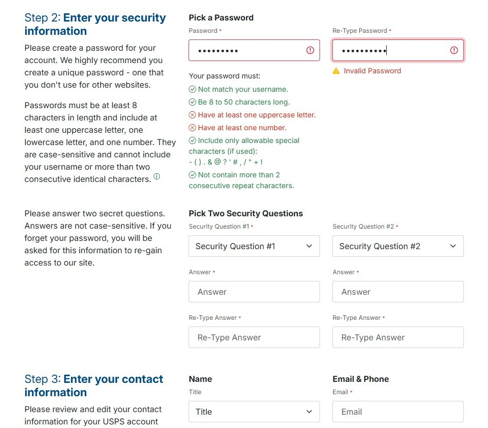

Learning Journal
#5: Research: Game Design
Increasingly, the games we are surrounded by today have shifted from physical forms of strategy, play, and connection, to digital facets of engagement, and short- and long-term rewards. As today’s designers conceptualize games with regards to a digital platform with a global audience, there are more nuances and expectations, versus what was previously loved in the simpler forms of sports and board/card games.
Wordle is one recent example of a digital game exploding in popularity. It’s a daily word puzzle that depends on your knowledge of 5-letter English words, spelling, and pure luck, and for many players, takes a mere few minutes to complete. This is an example of short-term engagement with frequent rewards, as the more often a user succeeds in the game, the more days they will return to play it, often sharing with friends or others online the word they guessed in 2 or so tries. The fact that users can only attempt it once daily encourages them to return the next day to try again, and test their knowledge and luck.
However, there is more to developing games beyond what spurred Wordle’s success. Not every popular game is popular because they’re a word guessing game. Through reading David Shariatmadari’s article on his journey to create the next Wordle, I’ve discovered that when developing games across a range of genres, multiple factors come into consideration:
- 1. Does it have the right balance between luck and skill?
- 2. Is there a replayability aspect?
- 3. As the user is engaging, does the game feel rewarding enough to stave off boredom?
Behind the scenes of a game’s development is a basic checklist to tick off, otherwise it’s likely to receive very little success. These three questions are the backbone of every culture-relevant game out there, whether it’s chess, poker, or even Minecraft. When developing a game, be sure that it’s visually appealing, but also, make sure it’s a game fun for your audience and not just in theory.
#4: Visual Thinking Analysis
text
text
text
#3: Research: Visual Thinking Strategies
There are numerous reasons why images are included in a website, and just as many creative methods of incorporating them. Visuals are the backbone of many human experiences, especially on a digital interface. While reading any news article,I’ve found that they’re often accompanied by one or more images, with one being a header image to draw attention. Other websites may use images as a form of storytelling and interactivity, rather than having users scroll through paragraphs of text or click buttons.
It always helps me to research what others have done for the same genre and audience to help push my creativity. While exploring projects online, I came across the website for Dutch creative agency Extrafazant which opened my eyes to countless methods of visual interactivity. Throughout its pages, I encountered scroll effects where slides and images would appear scrolling down, mouse effects where graphics appeared like confetti as the mouse moved around the page, and hover effects, where if my mouse swept across a certain element it would cause it to jump or play a video, just to name a few.
As Michael Gonchar concludes in his NYT article "10 Intriguing Photographs to Teach Close Reading and Visual Thinking Skills", interacting with visual information with zero context allows us, as humans, to think more deeply about what we’re seeing. After reading his article, I came to the following understanding: if an image piques someone’s interest but isn’t accompanied by text, they’ll slow down; they notice smaller details, new objects, expand their knowledge of what the lives of other people are like, be inspired with new ideas, and so much more. I think this curiosity can be pushed further by allowing users to have multiple touchpoints, instead of merely viewing content, such as vividly expressed in Extrafazant’s website above.
#2: Research: Overlay Design Patterns
I read some articles on overlay design as part of effective web modal research. I came out with fresh insight on the design process and a couple significant findings on how I can do better about user accessibility. Firstly, I really like the articles I read on the subject; I hadn’t considered many of the tips and methods they described. The most interesting article, published by Naema Baskanderi on Medium, describes website modal formatting and how to ensure they stay accessible throughout changing screen sizes.

The characteristics of a website modal/popup. Source: Naema Baskanderi on Medium.
Naema’s point about how “[u]ninvited modals may surprise the user and result in a quick dismissal of the window” hold very true in my case; I frequent recipe websites and online stores, and I get these popups all the time in the form of asking to sign up for a newsletter, commit to a subscription, or customize my cookie settings. I’m sure over 99% of users don’t care and would much rather the popup appear on the bottom only or be hidden to the side in the form of a labeled button, I personally automatically close them when I see them and I’m sure everyone else does the same. Of course I’d love 15% off if I want to purchase—but shoving it in my face 2 seconds after entering the page, and then not providing a way to access the coupon that requires email and text signup after closing it is poor practice.
Another point Naema made about modals, and web design in general, is applying keyboard shortcuts to modals to allow users to close them at the press of a button. I’ve found shortcuts useful many times, and the “esc” key doesn’t fail most times when I want to close something, although I never considered that site popups may include them for accessibility purposes as well.
#1: Research: Form Design
In order to understand effective form design, I read Salim Ansari’s article on Medium, "Best practices for form design", where he gave 20 tips on how to finetune a web-based form for users. Many tips were incredibly helpful and pointed out minute details that I didn’t previously consider as good habits to keep while designing forms, let alone webpages in general.
As a designer, I must remember that forms need to feel and look as accessible as possible: grouping fields correctly and showing error messages with a reason for it seem like no-brainers, but forms are still rejected by users due to poor accessibility, visual design, and lack of descriptions to help them complete the form.
This article led me to look for a frequently-used form online I can analyze from both a designer and user perspective. One great example is the USPS account registration form. Below, I listed steps and notable pros and cons of the design.
- 1. User selects account type (personal or business, both with descriptions of their benefits)


- 2. The form is three columns: leftmost includes description for each form section, and feels a bit wordy. The form fields are split across the other two columns.
- 3. Dropdown at the top allows user to change language—great for accessibility
- 4. Required questions are indicated by tiny red dots, barely discernible as asterisks, and those with poor vision won’t see them.
- 5. When a field is active, a blue border highlights it on the page
- 6. Each field has both an inline label and a label directly above, with proper space between each field. Several fields are repeated, to ensure users input the right information (like shown below)

- 7. While packed with fields and text, the form takes care to group similar fields visually.
- 8. Error messages are very distinct, and color-coded.
- 9. Once the form is completed and verified, a dark blue “Create Account” button appears.